La vidéo de *Pursuing AI* explore l’intégration profonde de Gemini au cœur du navigateur Google Chrome, marquant une transition décisive d’un web passif vers un web augmenté par l’intelligence artificielle agentique. Le créateur décrypte méthodiquement comment cette mise à jour redéfinit l’expérience utilisateur en transformant le navigateur en un véritable co-pilote intelligent, capable non seulement de restituer de l’information, mais aussi d’exécuter des tâches complexes en arrière-plan. La méthode repose sur une démonstration structurée par cas d’usage, classant les fonctionnalités de la simple lecture assistée jusqu’aux interactions vocales en mode mains libres et aux capacités d’action autonome.
Sur le plan technique et narratif, la vidéo illustre l’immense potentiel des interfaces multimodales et conversationnelles pour optimiser la productivité quotidienne. Pour les créateurs de contenu vidéo et les professionnels du numérique, l'analyse démontre comment l'IA générative et les outils de pointe (tels que Seedance 2.5 et Kling 3.0 pour l'habillage visuel) permettent d'illustrer des concepts abstraits, de synthétiser des flux d'informations massifs et d'accélérer drastiquement les phases de recherche et de scriptage. Les bénéfices concrets résident dans un gain de temps massif, une automatisation fluide des tâches répétitives et une capacité accrue à traiter des volumes de données multi-onglets sans friction.
---
Google vient d'intégrer son IA la plus puissante, Gemini, directement dans Chrome, et cela change notre façon de naviguer pour toujours. Qu'il s'agisse de résumer des pages web ou même d'agir à votre place, Gemini dans Chrome, c'est comme avoir un assistant personnel intégré directement dans votre navigateur. Dans cette vidéo, je vais décortiquer toutes les fonctionnalités, les cas d'usage les plus intéressants, et ce que vous devez savoir avant de l'utiliser.
Interface & Outils : Google Chrome / Panneau latéral Gemini intégré au navigateur
Contenu textuel & Code : Texte de l'interface Gemini : "Gemini acts on your behalf and may take unexpected actions. Please supervise closely and refrain from using it on sensitive sites.", champ de saisie "Buy these ingredients for me on Instacart.com using the Sprouts store!" et conversation sur une recette avec la question "Can I make this recipe gluten-free?".
Action / Démonstration : Présentation graphique initiale du logo Chrome et de l'intégration de Gemini, puis démonstration de l'utilisation du panneau latéral pour automatiser une tâche d'achat depuis un email et pour poser des questions sur le contenu d'une page web.
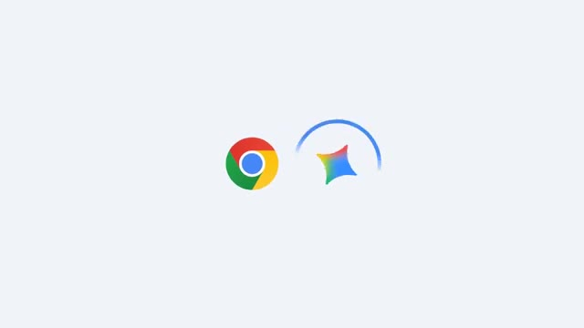
🔍 Agrandir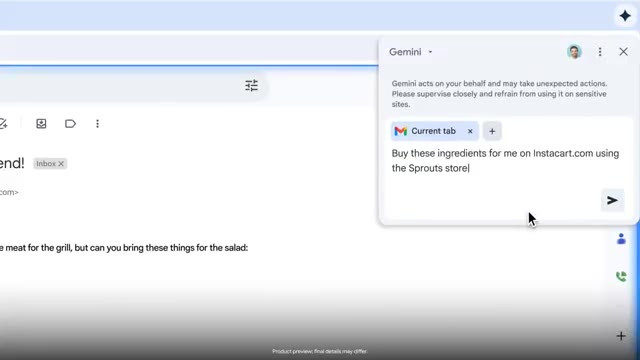
🔍 Agrandir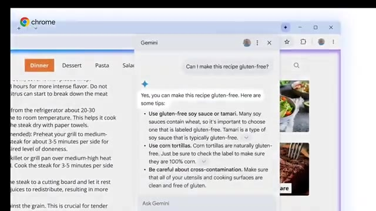
🔍 AgrandirFonctionnalité 1. Lecture et compréhension plus intelligentes. La première chose que fait Gemini, c'est de rendre la lecture en ligne beaucoup plus facile. Ouvrez un article long, un blog ou un document de recherche, et il résume instantanément les points clés. Et si le contenu est trop technique ou déroutant, Gemini peut le simplifier en un langage clair et direct. Ou même utiliser des analogies pour vous aider à comprendre plus rapidement.
Interface & Outils : Navigateur web avec le panneau latéral de l'assistant Gemini activé sur le côté droit de l'écran.
Contenu textuel & Code : URL de l'article : "www.thedailythread.com/blog/guide/10-office-fun-activities", titre : "10 Team Building Ideas for any Group". Dans le panneau Gemini, prompt : "What works for a group of 10 and takes less than 30 minutes?", suivi de réponses détaillées listant des activités (Birthday Line Up, Two Truths and a Lie, Human Knot, Marshmallow Challenge).
Action / Démonstration : Visualisation d'un article de blog et démonstration de la génération d'un résumé de contenu interactif par Gemini dans le panneau latéral.
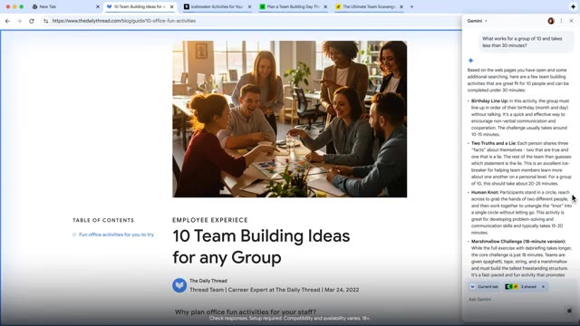
🔍 AgrandirSi vous êtes étudiant, cela pourrait vous faire économiser des heures de lecture chaque semaine. Des professionnels ou toute personne apprenant quelque chose de nouveau. J'aurais aimé avoir ça pendant mes examens. Les résumés YouTube et l'IA agentique. Une autre fonctionnalité puissante est la capacité de Gemini à vous faire gagner du temps sur le contenu. Imaginez ouvrir une longue vidéo YouTube. Gemini peut générer instantanément un résumé clair, vous donnant les points clés sans avoir à visionner toute la vidéo.
Interface & Outils : Interface utilisateur de Google Chrome / Gemini avec superposition de résumé de vidéo YouTube.
Contenu textuel & Code : Texte du résumé généré par Gemini sur une vidéo YouTube : « "Busy" is not the same as "important"... » et champ « Ask Gemini ».
Action / Démonstration : Démonstration de la génération automatique d'un résumé de vidéo YouTube par l'intelligence artificielle Gemini.
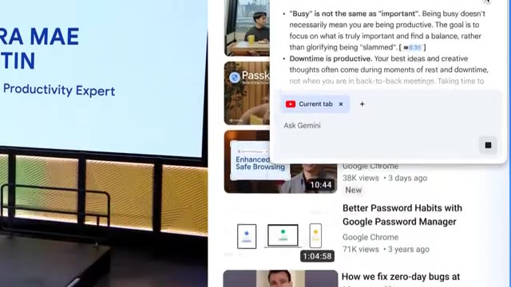
🔍 AgrandirMais cela ne s'arrête pas là. Gemini introduit également ce que Google appelle des capacités agentiques. Cela signifie que l'IA ne se contente pas de répondre à des questions. Elle peut réellement effectuer des actions pour vous. Par exemple, si vous faites des courses, au lieu d'ajouter des articles un par un, vous pouvez simplement dire à Gemini ce dont vous avez besoin, et il gère le processus en arrière-plan. Cela transforme Chrome d'un simple navigateur en un assistant actif qui fait le travail à votre place.
Interface & Outils : Navigateur Google Chrome affichant le site Instacart (Sprouts Farmers Market) avec un panneau latéral d'assistant IA agentique.
Contenu textuel & Code : Texte de recherche « Try "fruits I can store out of the fridge" », texte de commande de l'assistant IA « Buy these ingredients for me on Instacart.com using the Sprouts store », étapes affichées : « Navigating to Instacart.com », « Selecting the Sprouts store », avec l'état « Clicking ».
Action / Démonstration : L'assistant IA agentique navigue automatiquement sur le site web et sélectionne les produits demandés par l'utilisateur en arrière-plan.
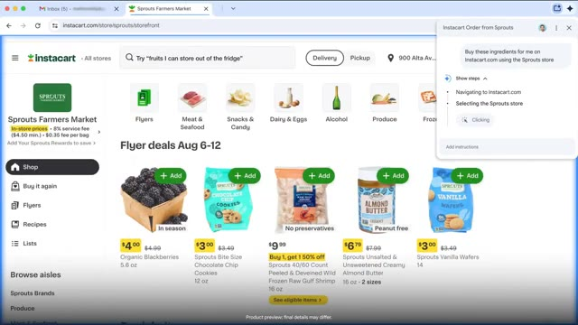
🔍 AgrandirEn ce moment, ces capacités d'agent sont encore en phase de test, mais Google prévoit de les déployer auprès des utilisateurs dans les prochains mois. C'est donc juste un aperçu de ce qui arrive bientôt. Ensuite, les comparaisons. Disons que vous faites du shopping, ouvrez quelques onglets de produits, et Gemini comparera instantanément les caractéristiques, les prix et même les avis, en vous donnant les avantages et les inconvénients. Cette fonctionnalité change la donne pour prendre des décisions rapidement. Quatrième fonctionnalité, l'adaptation de contenu. Gemini ne se contente pas de lire le contenu, il peut l'adapter. Par exemple, vous pouvez prendre une recette et demander à Gemini de la rendre végétarienne, sans gluten, ou de l'adapter à un plan de régime. Les développeurs peuvent également modifier des extraits de code,
Interface & Outils : Navigateur web Google Chrome avec intégration latérale de l'assistant Gemini.
Contenu textuel & Code : Sur l'image 1 : URL « instacart.com/store/sprouts/... », barre de recherche « mushrooms », panneau latéral « Instacart Order from Sprouts » affichant les étapes : « Navigating to Instacart.com », « Selecting the Sprouts store », « Searching for carrots », « Adding carrots to the cart », « Searching for mushrooms », statut « Waiting ». Sur l'image 4 : Fenêtre de chat Gemini avec le message utilisateur « Can I make this recipe gluten-free? » et la réponse de l'assistant : « Yes, you can make this recipe gluten-free. Here are some tips: Use gluten-free soy sauce or tamari. »
Action / Démonstration : Démonstration de l'automatisation de tâches d'achat en ligne par l'assistant IA et de l'adaptation interactive d'une recette de cuisine en version sans gluten.
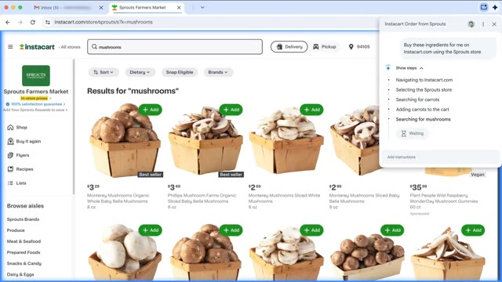
🔍 Agrandir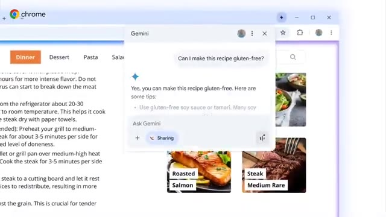
🔍 AgrandirJuste dans Chrome, l'une des parties les plus cool est le mode en direct. Vous pouvez réellement parler à Gemini à l'intérieur de Chrome, et il répond avec une voix naturelle pendant que vous naviguez. Imaginez cuisiner, travailler ou faire du multitasking. Le support IA mains libres est directement là avec vous. Fonctionnalité 6. Intégration des applications Google. Gemini se connecte également aux services Google. Qu'il s'agisse de résumer des vidéos YouTube, de récupérer des informations depuis Gmail ou de créer des événements dans le calendrier, cela fait de Chrome le hub central pour toutes vos tâches sans changer d'application.
Interface & Outils : Navigateur Google Chrome avec intégration de Gemini et Google Workspace.
Contenu textuel & Code : Texte de la page web, interface Gemini Live, champ de saisie avec le badge « Current tab », prompt : « Create a focus block between 8-10AM for a half-hou ».
Action / Démonstration : Navigation web, activation du mode Gemini Live, saisie d'une requête textuelle pour interagir avec une vidéo YouTube et l'agenda Google.
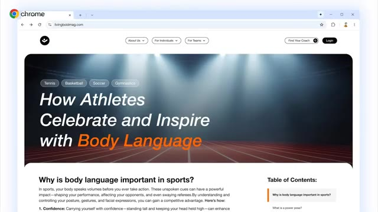
🔍 Agrandir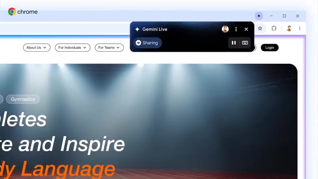
🔍 Agrandir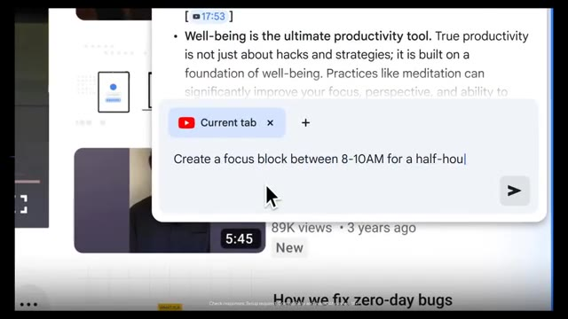
🔍 Agrandir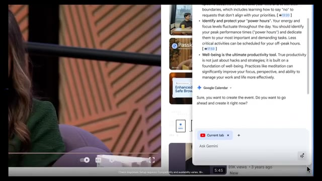
🔍 AgrandirL'une des fonctionnalités phares est l'Omnibox IA. Tapez simplement votre question directement dans la barre de recherche Chrome. Et Gemini fournit des réponses intelligentes et adaptées au contexte. Il peut même extraire des informations de plusieurs onglets ouverts, vous donnant une image complète et globale. Les meilleurs cas d'utilisation. Des étudiants résumant des lectures en quelques secondes. Des professionnels simplifiant la recherche. Des acheteurs comparant des produits plus rapidement.
Interface & Outils : Navigateur Google Chrome avec barre de recherche Omnibox et mode IA, suivi d'un écran graphique de présentation.
Contenu textuel & Code : Texte dans la barre de recherche : "I'm a side sleeper with occasional lower...", texte à l'écran : "THE BEST USE CASES", "Students summarizing readings in seconds.", "Professionnels simplifying research."
Action / Démonstration : Démonstration de la saisie d'une question dans la barre de recherche Google Chrome, puis affichage de diapositives textuelles résumant les cas d'utilisation.
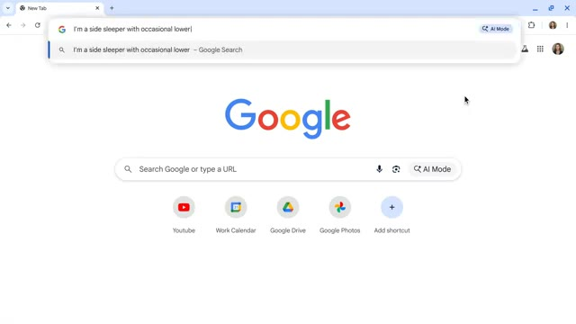
🔍 Agrandir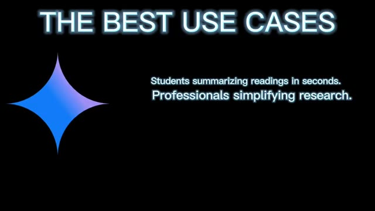
🔍 AgrandirLes créateurs adaptant des recettes, des scripts ou du code. Les adeptes du multitâche discutant avec Gemini en mode vocal. Et les utilisateurs occupés laissant Gemini agir pour eux grâce à l'IA agentique. Gemini dans Chrome n'est pas seulement un outil. C'est comme avoir un co-pilote pour le web. La question est : comment allez-vous l'utiliser ? Honnêtement, ce n'est que le début. Quelle est la première chose que vousisseriez faire faire par Gemini ? Dites-le-moi dans les commentaires.
Interface & Outils : Présentation graphique avec du texte à l'écran et des animations d'illustration (sans interface de logiciel en direct).
Contenu textuel & Code : Texte à l'écran affichant "THE BEST SOON CASES" avec une liste de cas d'usage, puis le logo Google Chrome avec l'étoile Gemini, et enfin un diagramme avec le logo du cerveau et le texte "Researching -> Learning -> Sharing".
Action / Démonstration : Animation graphique illustrant les cas d'utilisation et le branding de Gemini dans Chrome.